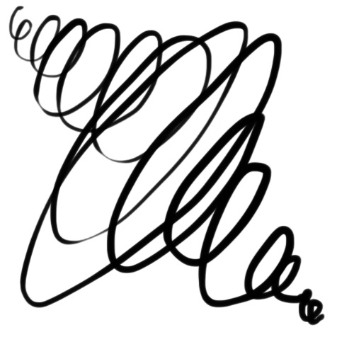

den normale utrænet person har ofte et bestemt problem
de mangler ofte teknikken og motorikken til hvordan man laver streger bedre og flotter ikke for at sige at det altid er dårligt, det kan være et valg kunsten selv har taget for at udtrykke en stil. men ofte holder de sig til det da de synes det er nemmere
den normale utrænet person har ofte et bestemt problem
de mangler ofte teknikken og motorikken til hvordan man laver streger bedre og flotter ikke for at sige at det altid er dårligt, det kan være et valg kunsten selv har taget for at udtrykke en stil. men ofte holder de sig til det da de synes det er nemmere
for at kunne mester stregen skal man prøver at bruge dem på alle mulige måder det ville sige at vi skal kunne bevæge vores arm på forskellige måder Og vi skal gøre det meget Det er vigtigt at vi ser den som en fysisk ting inden bare noget alle kan For man kan ikke bare være en bokser og forvente at man er mester fra start Mange som er gode til at tegne bruger deres tid på det så
 det tager ikke meget for at kunne udtrykke sig med en enkle streg Vores øjne plejer at sammenligne ting som ligner noget vi har set før med observation og udforsken kan man finde 1000 forskellige måder man kan udtrykke sig på bare ved brug af streger